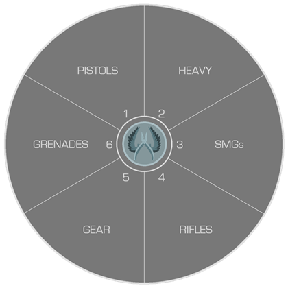

Les armes sur CS:GO
Sur CS:GO il y a pleins d'armes de différentes sortes. Il y a les pistolets , les armes lourdes , les fusils, etc...
Avant d'en apprendre plus sur les armes il faut savoir que les terroristes et les anti-terroristes n'ont pas exactement toutes les mêmes armes.
Elles ont toutes un prix, une cadence de tir et un spray. Nous allons toutes les voir en plusieurs parties.
I. Les fusils
Les fusils sont les armes les plus jouées. Les plus connues sont les AK-47 , AWP , FAMAS , M4-A4/M4-A1S. Quand on tire avec des fusils les balles ne vont pas tout droit, les balles se dispersent, c'est ce qu'on appelle le spray.
Commencons par l'AK47, les points sous l'image ci-dessous représentent la dispersion des balles.


Ducoup il faut savoir gérer la dispersion des balles en descendant son viseur pour que les balles aillent tout droit.
Pour les autres fusils ( excepté les snipers ) c'est un peu près pareil
Prenons la M4A4.